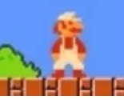

个人博客


最新文章
-
Rouge like
Rogue是一款1980年代诞生的游戏。在游戏中，玩家可以探索一个未知的地牢，努力突破自己的极限。当玩家死亡后，进度不会储存，需要重开新局。每一局的地图和内容物都是随机生成，确保不会有重复的体验。「回合制」、「永久死亡」和「随机生成地图」等等要素结合在一起，构成了Rogue这款迷人的游戏。这些要素后来被广泛的应用到各种游戏当中，因此人们就将有这些特色的游戏称之为「Rogue-like」。
-
消除类游戏
根据丹麦游戏设计师Jesper Juul1997年写下的定义，消除类游戏（tile-matching video game）——或者说得更通俗点，“三消游戏”，是一种需要玩家根据匹配标准操作方块，使其消失的益智类电子游戏，其核心挑战以及最大的乐趣乃是于杂乱无章的棋盘上识别图形、利用规律，并将方块由此消失并转化成分数的过程作为游戏对自己的奖励机制。这类玩法也经久不衰，如今的一众休闲小游戏中也或多或少能见其影子。
-

横版跳跃类游戏
最经典的游戏要属《超级玛丽》了，在那个红白机的时代，几乎每一个都玩过它。其能用简单的关卡设计，给玩家带来相当好的游戏体验，也是独立游戏开发者者用得最多的游戏模式。
-

©版权归属个人·2022-10-20